いろんな図柄
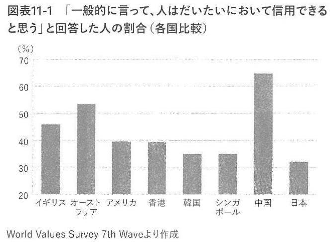
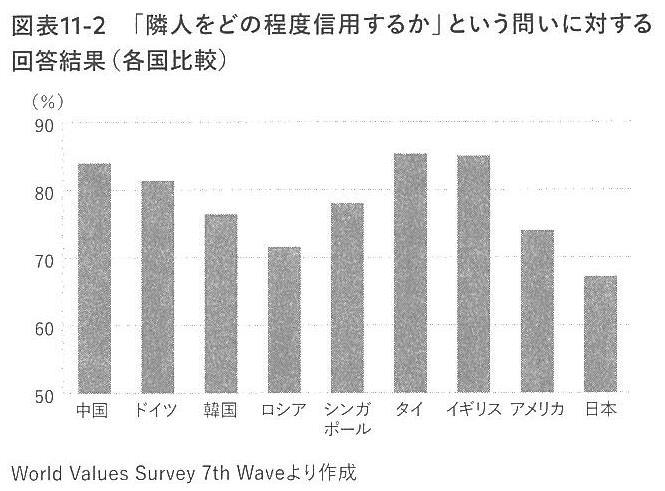
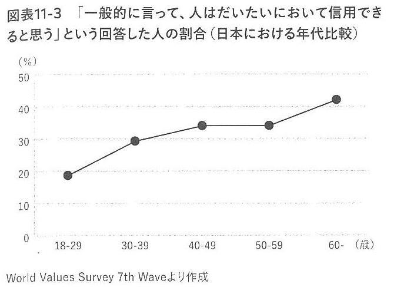
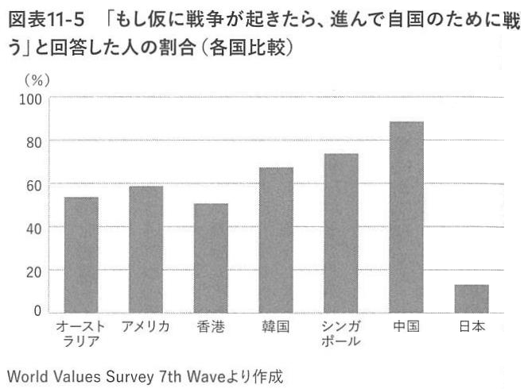
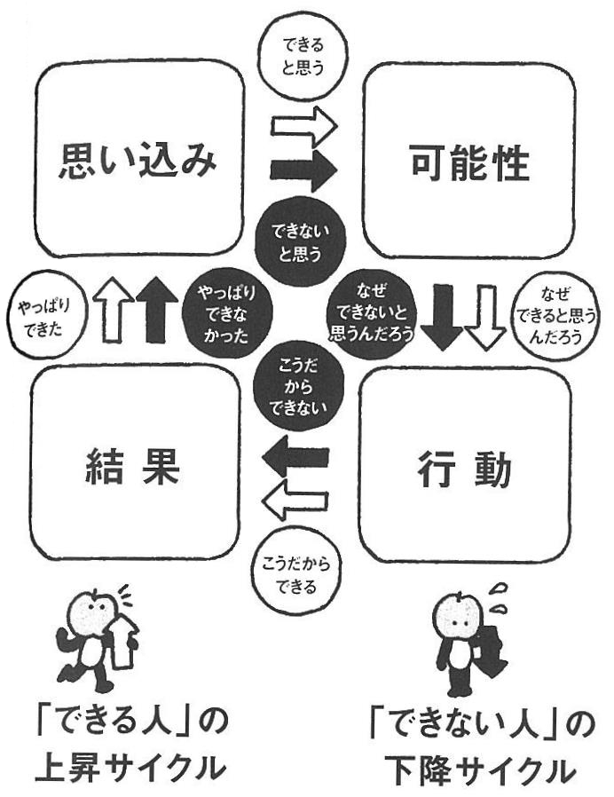
209人はだいたいにおいて信用できる
211隣人をどの程度信用するか
212人はだいたいにおいて信用できる
217進んで自国のために戦う
| 162思い込みのサイクル
| | | | | | | | | |
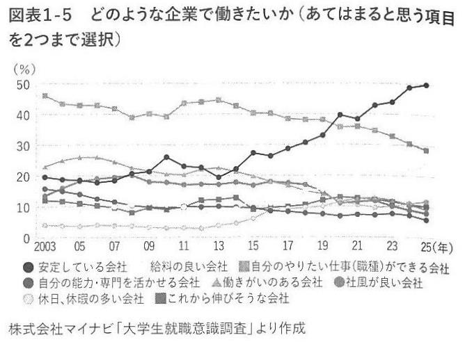
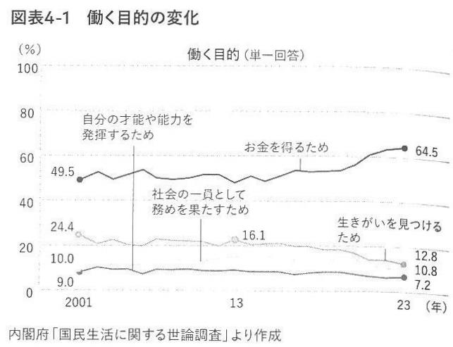
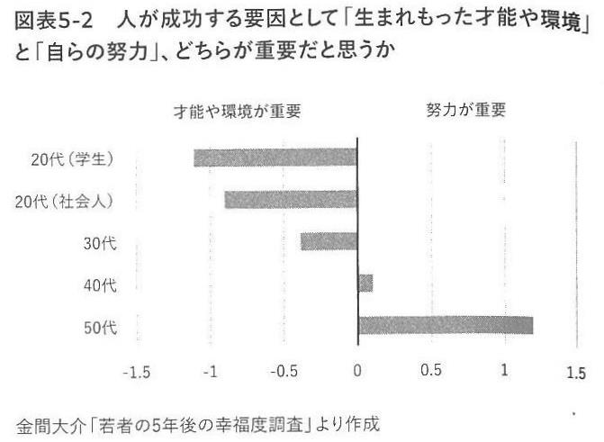
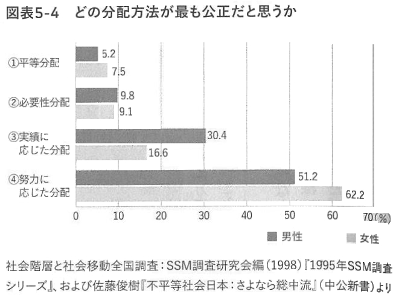
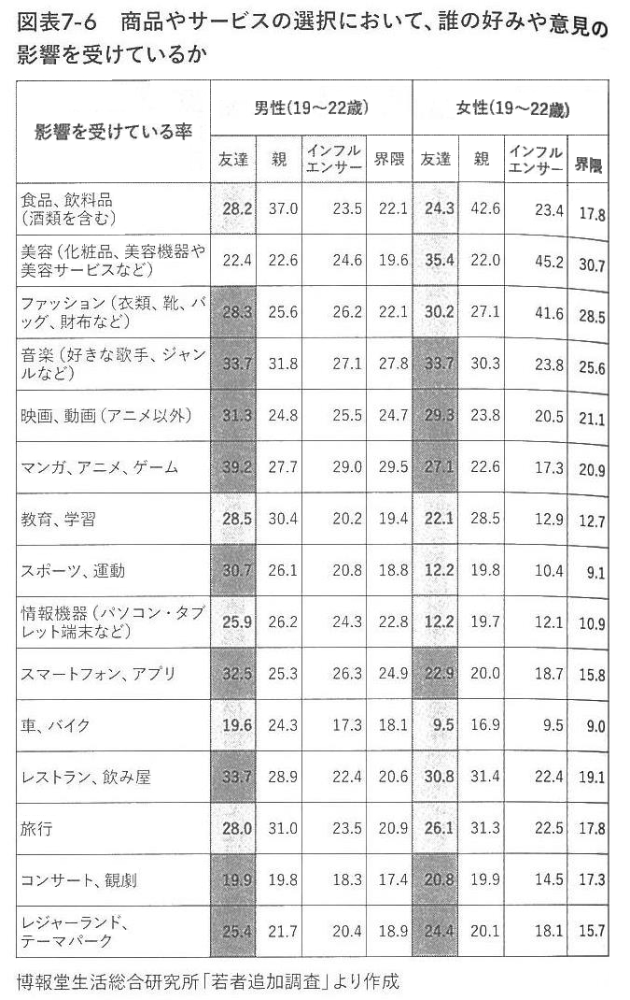
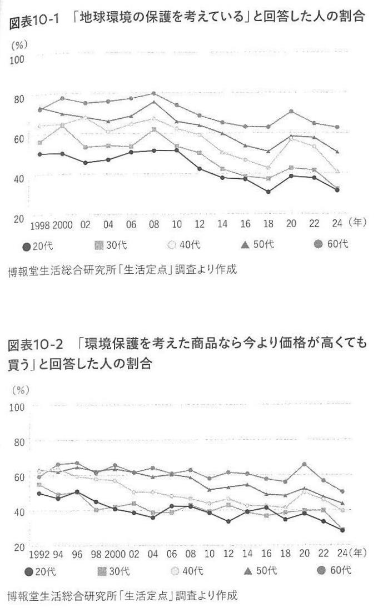
33どのような企業で働きたいか
73働く目的の変化
91人が成功する要因
139誰の好みや意見の影響を受けているか
192地球環境の保護と高くても買うか
| 31若者が理想とする上司像
| | | | | | | | | | | |
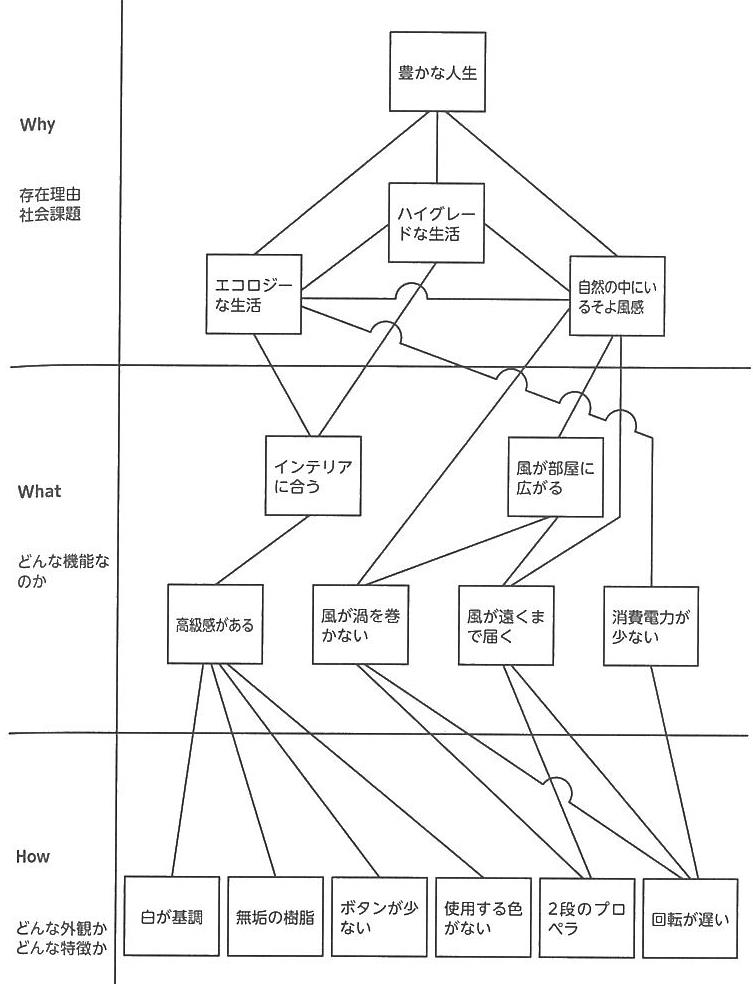
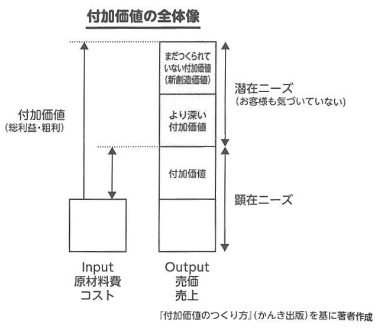
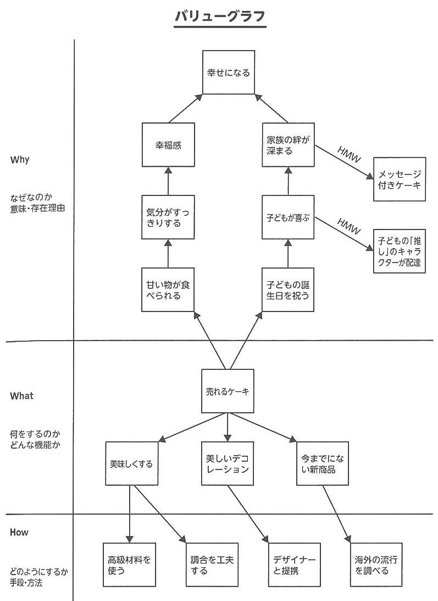
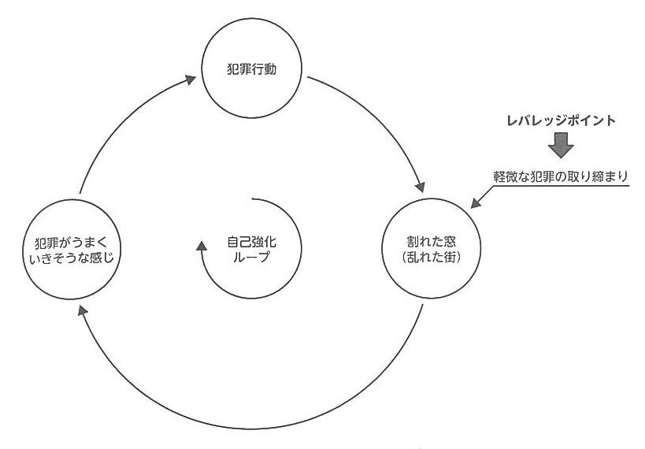
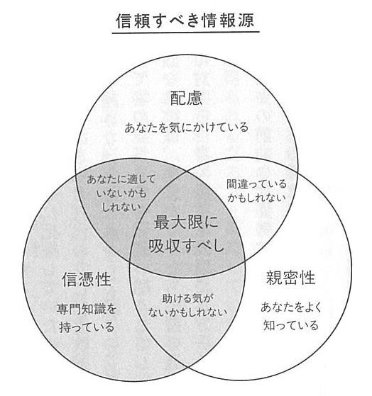

100「グリーンファン」の対話型鑑賞法（VTSI）
143付加価値の全体像
148「売れるケーキ」のバリューグラフ
184因果ループ図
103信頼すべき情報源
| 31若者が理想とする上司像
| | | | | | | | | | | |

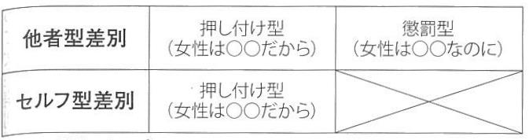
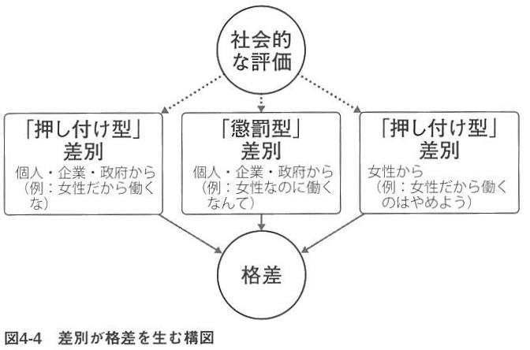
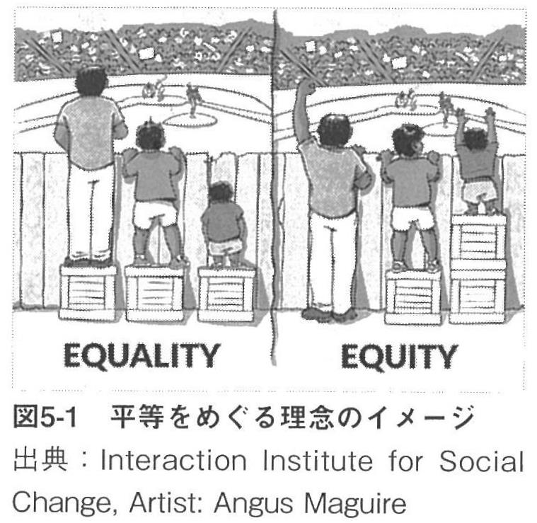
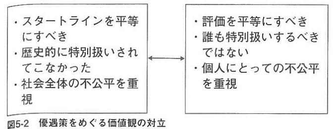

恋愛志向が賃金格差に与える影響
男女差別のタイプ
差別が格差を生む構図
平等をめぐる理念のイメージ
優遇策をめぐる価値観の対立
| ウェルビーイングに資するサービスの作り方
| | | | | | | | | | | |

知っているには2種類ある
「人を動かす１メッセージ」技術の全体像
「人を動かす１メッセージ」３つの技術
ストーリーラインと論点
論点を明示し、メッセージを集める
| 男女の賃金格差
| | | | | | | | | | | |


幸福スコア評価
幸福とビッグファイブ性格特性
心理的豊かさの分布
豊かさ・幸福・意味アンケート
パーソナリティ５つの基本特性
| メッセージを伝えて答えを進化させる
| | | | | | | | | | | |

読書時間・睡眠時間と成績
読み聞かせ時間と母親のストレス
カッピングの香味カテゴリー
コーヒーノキの分類
コーヒーの代表銘柄
| ウェルビーイング三要素
| | | | | | | | | | | |


2507会社が重視すること
2507求める人材の言葉の出現率
2507主体性発揮の構造
2508インサイトとコンセプト
2510弘前COIのめざすビジョン
| 2508高齢化の推移
| | | | | | | | | | | |
2505事業コンセプトの枠組み
2505知的作業での頭の使い方モード
2505優れたチャートの３条件
2505良いイシューの３条件
2506ビジョンの見通し方
| 2506ミッションコンセプトビジョン
| | | | | | | | | | | |
2412知的作業での頭の使い方モード
2504磨きしろリスト
2505イシューから始めるアプローチ
2505イシュー度と解の質の分布
2505課題解決の2つの型
| 2505構造的理解のパターン
| | | | | | | | | | | |

2406全国安全週間ポスター
2407ポストSDGsと言われる Well-being とは何か？
2408二元論_造形思考上p78
2409東洋の思想_日本哲学入門p167_藤田正勝_講談社現代新書
2412合理的行為の4類型
| 2505ダークな性格の特徴
| | | | | | | | | | | |